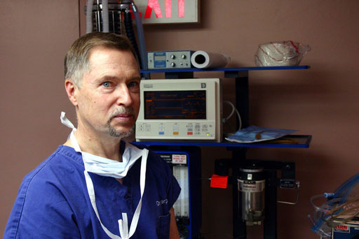

Dr. Richard Karpinski was raised in Philadelphia, and moved to Boston to attend Harvard Medical School. Following graduation in 1971, he remained in Boston to complete a 6-year general surgery training at Boston City Hospital (Harvard Surgical Service) and The New England Deaconess Hospital. He practiced as a general surgeon for two years in the United States Air Force, stationed at Strategic Air Command (SAC) headquarters near Omaha, and received his general surgery certification from the American Board of Surgery (ABS) during that time.
At the end of the Air Force commitment, Dr. Karpinski moved to New York with his family, to train in Plastic Surgery at the NYU Institute of Reconstructive Plastic Surgery. After completing the two-year residency, he entered private practice in 1981, affiliated principally with St.Luke's/Roosevelt Hospital. He was board certified in Plastic Surgery in 1983.
Dr. Karpinski has been involved in teaching from his undergraduate years onward: he has taught anatomy, surgery and computer programming to undergraduates, medical students and surgical trainees. Over the years, he has had teaching affiliations with Harvard University, Creighton University, University of Aberdeen (Scotland), and currently holds a faculty appointment at Columbia University College of Physicians and Surgeons (P&S).
In January 2013, Dr. Karpinski retired from his Manhattan practice, and moved with his wife to their Columbia County country home in New York's Hudson Valley. He now works part-time in a busy dermatology office practice in Castleton-on-Hudson.
An abbreviated curriculum vitae is also available.